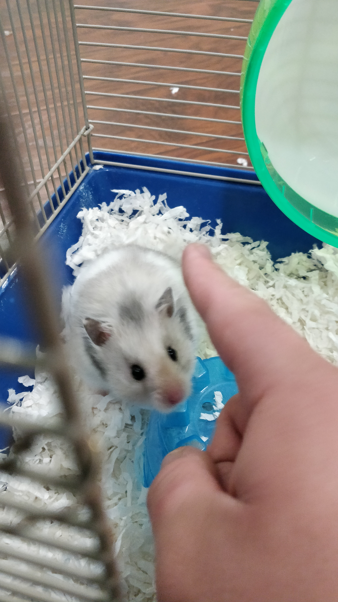

Nature Thingie
I decided to make a website from scratch for some reason and will just have this be a basic thing
where I show some pictures and describe them. I really liked how hungry I was while making this.
Please don't find my house from these images somehow, and if you do give me free food or something.

This is a picture of my backyard/garage into the road. In my opinion the greenery is kinda meh but
the road gets its job done.

My house only has one side to look at lol, and I do quite enjoy looking at it, It has a nice sidewalk.
It integrates my backyard/garage to the frontyard which provides a solid view and I like how the sidewalk is just a sidewalk being slightly
overtaken by the surrounding plants by it.

This is the front of my house, I cut out the front part(address) for obvious reasons.
I never noticed the elephant, so it must be new and my favorite hamster was buried here.
The bushes is fun

This is the view I get when I check for mail in the front of my house. I actaully never see this road because my back is how I exit
I get to see some trees, but the best part is when I see some cute puppies. Somethimes when I look out this I get a little nostalgic.
I dont do it as much but its always nice to remember the past.

This is my hamster his name is SushiDon and he is really cute.
Conclusion
I honestly have no Idea why I did a website it took more than 250 words to write down like 250 words and it probably isnt 250 words.
But that should be it, this was pretty darn hard to make
Chao mein friends